1. Bối cảnh lịch sử

Sau khi Hiệp định Genève (1954) được ký kết, Việt Nam tạm thời bị chia cắt thành hai miền. Tuy nhiên, cuộc chiến đã kéo dài thêm hai thập kỷ do sự can thiệp sâu sắc của các cường quốc trong bối cảnh Chiến tranh Lạnh.

*Hiệp định Paris (1973): Đây là tiền đề quan trọng nhất. Sau thất bại tại "Điện Biên Phủ trên không" cuối năm 1972, Mỹ buộc phải ký Hiệp định Paris, rút toàn bộ quân đội và nhân viên quân sự ra khỏi miền Nam Việt Nam.

*Thế trận thay đổi: Sau khi quân Mỹ rút đi, cán cân lực lượng trên chiến trường thay đổi có lợi cho chính quyền miền Bắc (Việt Nam Dân chủ Cộng hòa) và Mặt trận Dân tộc Giải phóng miền Nam Việt Nam. Trong khi đó, chính quyền Sài Gòn rơi vào tình trạng khủng hoảng kinh tế và suy giảm viện trợ từ Mỹ.
2. Diễn biến
Những ngày cuối cùng

Ngày 27 tháng 4, pháo phản lực của Quân Giải phóng lần đầu tiên kể từ sau Hiệp định Paris 1973 bắn trúng các khu vực trọng yếu tại trung tâm Sài Gòn, bao gồm Chợ Lớn và khu vực quanh Chợ Bến Thành, gây thiệt hại đáng kể về nhà cửa và thương vong cho thường dân. Ngay sau vụ pháo kích, Đại sứ Graham Martin xuất hiện trên truyền hình quốc gia Sài Gòn tuyên bố: "Với tư cách là đại sứ Hoa Kỳ, tôi sẽ không bỏ trốn trong đêm tối". Tuy nhiên, vụ việc đã tác động trực tiếp đến kế hoạch sơ tán bằng đường hàng không: các chuyến bay sử dụng máy bay vận tải C-141 bị đình chỉ do lo ngại an toàn, buộc phía Hoa Kỳ phải chuyển sang sử dụng máy bay C-130 – loại có khả năng cơ động cao hơn nhưng sức chở thấp hơn. Trong điều kiện khẩn cấp, mỗi chiếc C-130 cất cánh từ Tân Sơn Nhứt chở tới khoảng 240 người, vượt xa công suất tiêu chuẩn.

Từ ngày 27 đến 29 tháng 4, tình hình trong thành phố trở nên hỗn loạn nghiêm trọng. Tiếng súng nhỏ, pháo phòng không và súng cối vang lên tại nhiều khu vực. Các cửa hàng trên các tuyến phố chính như đường Tự Do (nay là Đồng Khởi) đồng loạt đóng cửa. Nhiều người dân tranh thủ tràn vào các siêu thị Mỹ bị bỏ lại cùng các cửa hàng quân nhu PX để hôi của, lấy đi các mặt hàng tiêu dùng, thiết bị điện tử, rượu bia và thực phẩm. Những vật phẩm này được vận chuyển bằng xe kéo ra các khu chợ dã chiến gần Thảo Cầm Viên Sài Gòn để bán lại. Bất chấp lệnh giới nghiêm còn hiệu lực, người dân vẫn tụ tập đông đảo trên đường phố trong tình trạng vô tổ chức. Một số binh sĩ thuộc Sư đoàn 18 Bộ binh QLVNCH, sau khi bị tan rã tại mặt trận, đã quay về thành phố trong trạng thái hoảng loạn, có trường hợp sử dụng vũ khí để thị uy hoặc cướp giật nhằm vào người nước ngoài. Đồng thời, xuất hiện các báo cáo cho thấy lực lượng Quân Giải phóng đã tiến hành thâm nhập vào một số khu vực nội đô, gây ra tình trạng kiểm soát chồng lấn. Có thông tin ghi nhận máy bay trực thăng của Hoa Kỳ bị bắn rơi khi bay qua các khu vực có hỏa lực đối phương.
Chiến dịch Gió lốc
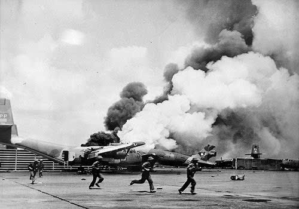
Từ chiều tối ngày 28 đến rạng sáng ngày 29 tháng 4 năm 1975, sân bay Tân Sơn Nhứt bị oanh kích dữ dội bởi máy bay cường kích A-37 và pháo hạng nặng của quân Giải phóng. Nhiều máy bay trong căn cứ bị phá hủy dưới làn đạn pháo. Đợt pháo kích kéo dài đến bình minh đã khiến Thiếu tướng Homer D. Smith, Tùy viên Quân sự cuối cùng của Hoa Kỳ tại Việt Nam, phải thông báo với Đại sứ Martin rằng đường băng đã hư hại nặng nề, không thể tiếp tục sử dụng máy bay cố định cánh cho chiến dịch di tản. Thay vào đó, cần chuyển sang phương án di tản toàn bộ bằng trực thăng. Ban đầu, Đại sứ Martin vẫn cố giữ lời hứa đảm bảo mọi nhân viên liên quan tại Đại sứ quán Hoa Kỳ sẽ được đưa ra ngoài, nên ông do dự không muốn chấp thuận phương án thay thế. Tuy nhiên, sau khi đích thân đến Tân Sơn Nhứt và tận mắt chứng kiến mức độ thiệt hại nghiêm trọng, ông nhận ra lời cam kết đó không còn khả năng thực hiện. Cùng lúc, các báo cáo từ ngoại ô thành phố cho biết quân Giải phóng đang áp sát thành phố từ nhiều hướng. Vào 10 giờ 48 phút sáng, Đại sứ Martin liên hệ với Ngoại trưởng Henry Kissinger, thông báo ông chấp thuận khởi động Chiến dịch Gió lốc. Washington đáp ứng chỉ sau 3 phút, chính thức ban hành lệnh thực hiện. Tín hiệu bắt đầu chiến dịch được phát sóng trên đài phát thanh của quân đội Hoa Kỳ tại Sài Gòn, gồm hai phần: một bản tin thời tiết giả định với câu nói "Nhiệt độ ở Sài Gòn hiện là 112 độ F (tương đương 44 độ C) và tiếp tục tăng", tiếp theo là bản thu âm bài "White Christmas" do Bing Crosby trình bày. Đây là tín hiệu mật thông báo cho tất cả công dân Hoa Kỳ đang ở Việt Nam rằng chiến dịch sơ tán đã chính thức bắt đầu.
Nhân viên tác chiến trên boong tàu sân bay USS Midway hối hả đẩy các trực thăng UH-1 của Không lực VNCH xuống biển để giải phóng chỗ cho các trực thăng khác đang chờ hạ cánh. Khi ca khúc "White Christmas" vang lên trên làn sóng phát thanh, cuộc đại di tản bằng trực thăng của Mỹ chính thức khởi động. Tại vùng biển phía nam Việt Nam, Hạm đội 7 của Hải quân Hoa Kỳ triển khai hàng chục tàu chiến áp sát vùng ven bờ để làm điểm tiếp nhận. Trong nội thành Sài Gòn, hàng loạt xe buýt quân sự được điều động, liên tục đưa người từ các điểm tập trung đến khu vực đón trực thăng. Trên bầu trời thành phố, máy bay trực thăng CH-53 và CH-46 bay rợp trời, liên tục thực hiện các chuyến vận chuyển công dân Mỹ cùng những người Việt Nam có liên hệ, ra các tàu ngoài khơi.
Khuôn viên Văn phòng Tùy viên Quốc phòng Hoa Kỳ (DAO) nằm ở phía đông nam sân bay Tân Sơn Nhứt là điểm sơ tán chính trong Chiến dịch Gió lốc. Phần lớn các xe buýt đưa người sơ tán đều có điểm đến cuối cùng tại đây. Những chiếc xe buýt đầu tiên đã đến khu vực DAO vào buổi trưa ngày 29 tháng 4, và ngay trong chiều hôm đó, trực thăng CH-53 bắt đầu tiếp cận sân bay từ ngoài khơi. Đến chiều tối, 395 công dân Mỹ và hơn 4.000 người Việt Nam đã được đưa ra khỏi Sài Gòn từ khu vực DAO.
Lúc 23 giờ đêm, toàn bộ lính Thủy quân Lục chiến Hoa Kỳ làm nhiệm vụ bảo vệ sân bay Tân Sơn Nhứt được lệnh rút về tuyến phòng thủ cuối cùng, đồng thời kích nổ chất nổ phá hủy trụ sở chính DAO, bao gồm cả trang thiết bị, hồ sơ, tài liệu và tiền mặt của Mỹ. Cùng thời điểm, hãng hàng không Air America – một đơn vị ngụy trang của CIA – cũng triển khai trực thăng UH-1 tham gia vào chiến dịch, hỗ trợ vận chuyển hơn 1.000 người tị nạn trong ngày 29. Mặc dù ban đầu, Đại sứ quán Hoa Kỳ tại Sài Gòn không được xác định là điểm sơ tán chính, mà chỉ đóng vai trò trạm trung chuyển cho nhân viên đại sứ quán và các chuyến xe nối các điểm tập kết đến sân bay, nhưng do nằm ngay trung tâm thành phố, nơi này nhanh chóng trở thành tâm điểm chú ý. Ngay từ sáng sớm, khoảng 10.000 người dân đã tụ tập quanh khuôn viên đại sứ quán. Dù phần lớn là người tò mò muốn biết tình hình ở đại sứ quán, nhưng cũng không ít người tìm cách xâm nhập khuôn viên, hy vọng được xét diện người tị nạn để có cơ hội rời khỏi Việt Nam. Nhiều người leo lên tường rào, tạo ra tình cảnh hỗn loạn. Cảnh sát Sài Gòn chỉ chịu phối hợp giữ gìn trật tự sau khi được hứa cho đi theo đoàn sơ tán. Ngoài ra, thời tiết mùa mưa đến sớm cũng ảnh hưởng đến chiến dịch. Trời nhiều mây, sương mù, khói lửa từ các đám cháy trong thành phố gây giảm tầm nhìn, ảnh hưởng nghiêm trọng đến đường bay của trực thăng. Lúc 3 giờ 45 phút sáng ngày 30 tháng 4, Đại sứ Martin nhận được chỉ thị từ Kissinger và Ford yêu cầu chấm dứt việc di tản người Việt Nam, chỉ ưu tiên người Mỹ. Dù ban đầu cố trì hoãn để tiếp tục sơ tán thêm thường dân, lệnh này vẫn được chính thức thực thi sau 4 giờ sáng, do lo ngại quân Giải phóng sắp tiến vào thành phố và Washington mong muốn tuyên bố kết thúc chiến dịch sớm. Vào khoảng 4 giờ 55 phút sáng, Đại sứ Graham Martin lên trực thăng CH-46 của Phi đội trực thăng 165 Thủy quân Lục chiến Hoa Kỳ, rời khỏi tòa đại sứ. Chiếc trực thăng cuối cùng cất cánh lúc 7 giờ 53 phút, đưa theo nhóm lính Thủy quân Lục chiến cuối cùng bảo vệ tòa nhà. Tổng kết, từ nóc tòa đại sứ đã sơ tán được 978 công dân Mỹ và hơn 1.000 người Việt Nam. Tuy nhiên, khi chiếc trực thăng cuối rời đi, hàng trăm người Việt vẫn bị bỏ lại trong khuôn viên, và nhiều người khác tụ tập ngoài phố chờ đợi trong tuyệt vọng. Chiến dịch Gió lốc không vấp phải sự can thiệp quân sự trực tiếp nào từ quân Giải phóng. Dù một số phi công Mỹ nhận được cảnh báo rằng pháo phòng không miền Bắc đang nhắm vào họ nhưng trên thực tế không có chiếc trực thăng nào bị bắn trúng. Theo đánh giá của Bộ Tổng tham mưu Việt Nam Dân chủ Cộng hòa, nếu để Mỹ hoàn tất việc rút lui, họ sẽ giảm khả năng can thiệp vào chiến dịch Hồ Chí Minh, do đó Đại tướng Văn Tiến Dũng nhận lệnh không được tấn công máy bay Mỹ. Dù chiến dịch sơ tán chính thức kết thúc, nhiều người Việt vẫn tiếp tục tự tìm cách thoát khỏi đất nước. Nhiều phi công của Không lực Việt Nam Cộng hòa tự điều khiển trực thăng bay ra tàu chiến Hoa Kỳ ngoài khơi để xin tị nạn. Một trong số đó là cựu Thủ tướng kiêm Tư lệnh Không quân Nguyễn Cao Kỳ. Do số lượng trực thăng quá lớn, nhiều chiếc sau khi hạ cánh phải bị đẩy xuống biển để nhường chỗ cho các máy bay khác đến sau. Ngoài trực thăng, còn có một số máy bay cánh cố định hạ cánh thành công xuống tàu sân bay.
Quân Giải phóng tiến vào Sài Gòn

Vào rạng sáng ngày 30 tháng 4, Đại tướng Văn Tiến Dũng nhận được lệnh tấn công từ Bộ Chính trị Ban Chấp hành Trung ương Đảng Lao động Việt Nam. Ông sau đó ra chỉ thị cho các chỉ huy mặt trận tiến thẳng vào các cơ sở trọng yếu và các điểm chiến lược trong nội đô. Đơn vị đầu tiên của quân Giải phóng tiến vào thành phố là Sư đoàn 324. Vào thời điểm đó, chính quyền Sài Gòn không đưa ra lời kêu gọi nào đến người dân về việc hiến máu, lương thực hay hỗ trợ khác.
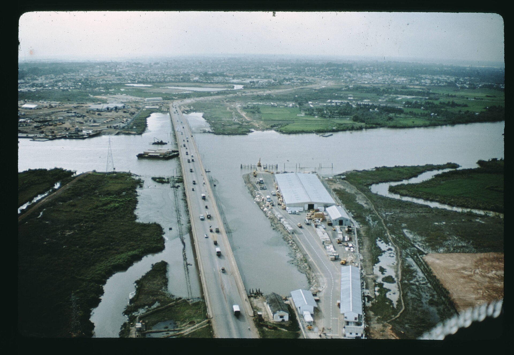
Lúc 8:00 sáng, ba giờ sau khi chiếc trực thăng cuối cùng rời nóc Đại sứ quán Hoa Kỳ, Thượng tướng Trần Văn Trà ra lệnh cho các đơn vị QGPMNVN tiến vào Sài Gòn từ năm hướng. Lúc bấy giờ, lực lượng đặc công quân Giải phóng tấn công cầu Tân Cảng nhưng bị lực lượng Dù của QLVNCH đẩy lui. Lúc 09:00, đoàn xe tăng QGPMNVN tiếp cận cầu và bị pháo kích bởi xe tăng QLVNCH, một xe T-54 đi đầu bị bắn cháy khiến tiểu đoàn trưởng Ngô Văn Nhỡ tử trận. Lực lượng Đặc nhiệm 3, Liên đoàn Biệt Cách Dù 81 của QLVNCH dưới quyền Thiếu tá Phạm Châu Tài phòng thủ sân bay Tân Sơn Nhứt, được tăng cường bởi tàn quân đơn vị Lôi Hổ. Lúc 07:15 sáng, Trung đoàn 24 quân Giải Phóng tiếp cận ngã tư Bảy Hiền, cách cổng chính sân bay khoảng 1,5 km. Xe tăng T-54 dẫn đầu trúng đạn súng không giật M67, chiếc kế tiếp bị một xe tăng M48 bắn cháy. Bất chấp tổn thất ban đầu, bộ binh QGPMNVN tiếp tục áp sát theo đội hình từng tổ nhỏ, tiến hành cận chiến quyết liệt với lực lượng phòng thủ trong từng ngôi nhà dọc trục giao thông. Trận đánh diễn ra ác liệt, buộc các đơn vị QLVNCH phải co cụm, rút lui về khu vực sân bay lúc 08:45. Ngay sau đó, QGPMNVN điều ba xe tăng cùng một tiểu đoàn bộ binh tổ chức đợt xung phong trực diện vào cổng chính sân bay. Tuy nhiên, hỏa lực chống tăng dày đặc cùng các ổ súng máy của QLVNCH đã lập tức khai hỏa, tiêu diệt toàn bộ đội hình xung kích. Cả ba xe tăng bị bắn cháy, ít nhất 20 binh sĩ QGPMNVN nằm lại trận địa. QGPMNVN cố gắng triển khai một khẩu pháo cao xạ 52-K 85 mm để yểm trợ, nhưng bị bắn hỏng trước khi kịp khai hỏa.
Sư đoàn 10 QGPMNVN lệnh điều thêm tám xe tăng và một tiểu đoàn bộ binh tăng viện. Tuy nhiên, khi tiếp cận ngã tư Bảy Hiền, họ bị không kích bởi các máy bay tiêm kích của KLVNCH xuất phát từ căn cứ không quân Bình Thủy, khiến hai xe tăng T-54 bị phá hủy. Sáu xe còn lại đến được cổng chính lúc 10:00, mở đợt tấn công tiếp theo, nhưng hai xe bị bắn cháy tại chỗ và một chiếc khác bị tiêu diệt khi đang cố gắng tạt sườn. Một cánh quân khác gồm Tiểu đoàn xe tăng 2 và Trung đoàn bộ binh 28 tiến đánh Bộ Tổng Tham mưu. Dù nhận tin Tổng thống Dương Văn Minh tuyên bố đầu hàng, một số đơn vị vẫn tiếp tục chống cự lẻ tẻ cho đến khi các lực lượng tiến công kiểm soát hoàn toàn khu vực này. Lúc 10:24, Tổng thống Dương Văn Minh hạ lệnh đơn phương ngừng chiến và tuyên bố sẽ đầu hàng vô điều kiện. Ông ra lệnh cho toàn bộ QLVNCH ngừng bắn trong trật tự và giữ nguyên vị trí, đồng thời mời Chính phủ Cách mạng Lâm thời tham gia vào một lễ bàn giao chính quyền có trật tự nhằm tránh đổ máu không cần thiết. Khoảng 10:30, Thiếu tá Phạm Châu Tài tại phi trường Tân Sơn Nhứt sau khi nghe tin về tuyên bố đầu hàng qua phát thanh đã đến Bộ Tổng Tham mưu để xin chỉ thị. Ông gọi cho Dương Văn Minh và được chỉ đạo chuẩn bị đầu hàng. Theo một số nguồn, Thiếu tá Tài có nói với ông Minh rằng: "Nếu xe tăng Việt Cộng tiến vào Dinh Độc Lập, chúng tôi sẽ đến giải cứu ngài." Tuy nhiên, sau khi Dương Văn Minh từ chối, ông đã ra lệnh cho binh sĩ rút khỏi cổng sân bay. Quân Giải phóng tiến vào căn cứ lúc 11:30. Tại khu vực cầu Tân Cảng, QLVNCH vẫn tiếp tục đấu pháo với xe tăng của QGPMNVN cho đến khi chỉ huy QLVNCH nhận được lệnh đầu hàng qua sóng vô tuyến. Mặc dù cầu đã được gài sẵn khoảng 1.800 kilôgam (1,8 t) thuốc nổ từ trước, lệnh kích hoạt không được thực hiện. Đến 10 giờ 30 phút, đoàn xe tăng của QGPMNVN tiến qua cầu, mở đường tiến vào nội đô Sài Gòn.
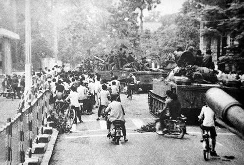
Tuyên bố đầu hàng chính thức
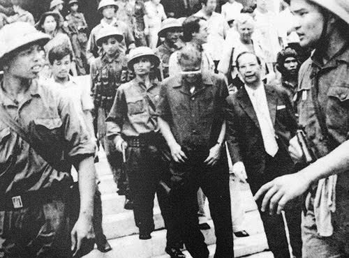
Lữ đoàn xe tăng 203 thuộc Quân đoàn 2 (do Thiếu tướng Nguyễn Hữu An chỉ huy dưới quyền Chỉ huy trưởng Nguyễn Tất Tài và Chính ủy Bùi Văn Tùng, là đơn vị đầu tiên xông vào Dinh Độc Lập vào đầu giờ trưa ngày 30 tháng 4 năm 1975. Xe tăng 843 (loại T-54 của Liên Xô) là chiếc đầu tiên đâm vào cổng phụ bên phải của Dinh. Khoảnh khắc này được quay lại bởi nhà quay phim người Úc Neil Davis. Ngay sau đó, xe tăng 390 (loại Type 59 của Trung Quốc) đã phá cổng chính và tiến vào sân trước. Trong nhiều năm, tài liệu chính thức của chính phủ Việt Nam và một số nguồn sử học quốc tế vẫn ghi nhận rằng xe tăng 843 là chiếc đầu tiên tiến vào Dinh Độc Lập. Tuy nhiên, năm 1995, Françoise Demulder công bố bức ảnh cho thấy xe 390 thực tế đã vào trước qua cổng chính, còn xe 843 vẫn đang kẹt phía sau trụ thép của cổng phụ bên phải (nhìn từ bên trong dinh ra). Trong ảnh, Bùi Quang Thận được thấy đang chạy bộ với lá cờ Giải phóng quân trong tay. Cả hai xe tăng sau đó đều được công nhận là bảo vật quốc gia năm 2012. Xe 843 hiện đang được trưng bày tại Bảo tàng Lịch sử Quân sự Việt Nam ở Nam Từ Liêm, Hà Nội, còn xe 390 hiện được trưng bày tại Bảo tàng Lực lượng Tăng - Thiết giáp ở Cầu Giấy, Hà Nội. Dương Văn Minh và Vũ Văn Mẫu được binh sĩ QGPMNVN hộ tống ra xe Jeep để đến đài phát thanh đọc tuyên bố đầu hàng. Vào lúc 11:30, Trung úy Bùi Quang Thận đã hạ lá cờ Việt Nam Cộng hòa trên nóc dinh xuống và kéo lá cờ Chính phủ Cách mạng lâm thời Cộng hòa Miền Nam Việt Nam lên. Khoảng 10 phút sau khi xe tăng 390 phá cổng, Chính ủy Bùi Văn Tùng cũng tới dinh. Khi Dương Văn Minh thấy Trung tá Tùng là sĩ quan cao cấp nhất có mặt lúc đó, ông nói: "Tôi chờ các ông tới để bàn giao chính quyền". Bùi Văn Tùng liền đáp: "Các ông đã không còn gì để bàn giao. Thay mặt Cách mạng, tôi đề nghị ông ra lệnh đầu hàng vô điều kiện để tránh đổ máu không cần thiết. Bùi Văn Tùng sau đó viết bản tuyên bố đầu hàng, giải thể toàn bộ chính quyền Việt Nam Cộng hòa. Ông cùng nhiều người, trong đó có Đại úy Phạm Xuân Thệ hộ tống Dương Văn Minh đến Đài phát thanh Sài Gòn để đọc tuyên bố, nhằm tránh thêm thương vong không cần thiết. Toàn bộ sự kiện được nhà báo Đức Börries Gallasch ghi âm lại bằng máy ghi âm cá nhân. Vào lúc 14 giờ 30, tại đài phát thanh, Tổng thống Dương Văn Minh thay mặt toàn bộ nội các của chính phủ Sài Gòn đã đọc tuyên bố đầu hàng vô điều kiện:
"Tôi, Đại tướng Dương Văn Minh, Tổng thống chính quyền Sài Gòn, kêu gọi Quân lực Việt Nam Cộng Hòa hạ vũ khí đầu hàng không điều kiện quân Giải phóng Miền Nam Việt Nam. Tôi tuyên bố chính quyền Sài Gòn từ trung ương đến địa phương phải giải Mỹ hoàn toàn. Từ trung ương đến địa phương trao lại cho Chính phủ Cách mạng lâm thời miền Nam Việt Nam."
Thay mặt các đơn vị quân Giải phóng đánh chiếm dinh Độc Lập, Trung tá Bùi Văn Tùng đọc lời tiếp nhận đầu hàng:
"Chúng tôi đại diện lực lượng quân Giải phóng Miền Nam Việt Nam long trọng tuyên bố Thành phố Sài Gòn đã được giải phóng hoàn toàn, chấp nhận sự đầu hàng không điều kiện của Tướng Dương Văn Minh, Tổng thống chính quyền Sài Gòn."
Những sự kháng cự cuối cùng
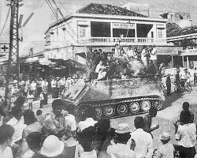
Sau khi Quân Giải phóng miền Nam Việt Nam tiếp quản Sài Gòn, các tuyến liên lạc chính giữa thành phố và thế giới bên ngoài lập tức bị cắt đứt. Ngay trong buổi sáng ngày 30 tháng 4, khu vực phía Tây Nam thủ đô – đặc biệt là vùng Đồng bằng sông Cửu Long – vẫn còn ghi nhận các hoạt động tác chiến lẻ tẻ. Một số máy bay của Không lực Việt Nam Cộng hòa cất cánh từ căn cứ không quân Bình Thủy (nay là Sân bay quốc tế Cần Thơ) nhằm đánh chặn các đơn vị QGPMNVN đang tiến công, đánh dấu trận xuất kích cuối cùng của KLVNCH trong chiến tranh Việt Nam. Trên bộ, lực lượng thuộc Quân đoàn 4 của QLVNCH vẫn tiếp tục duy trì hoạt động đối kháng. Chuẩn tướng Lê Văn Hưng, Phó Tư lệnh quân đoàn, từng dự tính tận dụng nguồn lương thực dồi dào của vùng đồng bằng để tổ chức một phong trào kháng chiến bí mật kéo dài. Tuy nhiên, các đơn vị du kích quân Giải phóng tại địa phương – vốn từng bị tổn thất nặng nề trong giai đoạn Chiến dịch Phụng Hoàng – nhanh chóng trỗi dậy, mở các đợt tấn công tái kiểm soát địa bàn, cô lập Quân đoàn 4 với trung tâm Sài Gòn, khiến kế hoạch kháng cự nhanh chóng sụp đổ. Tối ngày 30 tháng 4, tại Bộ Tư lệnh Quân đoàn 4 ở Cần Thơ, Chuẩn tướng Lê Văn Hưng cùng Thiếu tướng Nguyễn Khoa Nam, Tư lệnh Quân khu, đã chọn cách tự sát trước tình thế thất bại không thể đảo ngược. Ngay sau đó, Quân khu 4 chính thức tan rã. Cùng ngày, một số tướng lĩnh khác của Nam Việt Nam cũng tự kết liễu, bao gồm Chuẩn tướng Trần Văn Hai – Tư lệnh Sư đoàn 7 Bộ binh, và Thiếu tướng Phạm Văn Phú – nguyên Tư lệnh Quân khu 2. Trong những ngày đầu tháng 5, rải rác vẫn còn một số nhóm quân cảnh và binh sĩ QLVNCH tiếp tục kháng cự, tiêu biểu như trường hợp của Đại tá Hồ Ngọc Cẩn, nhưng đều nhanh chóng bị đánh bại và bắt giữ. Cũng trong tối ngày 30 tháng 4, các tỉnh ngoại vi chưa bị kiểm soát hoàn toàn như Tây Ninh, Hậu Nghĩa, Long An và Gò Công lần lượt tuyên bố đầu hàng. Đến ngày 2 tháng 5 năm 1975, toàn bộ các tỉnh thuộc vùng Đồng bằng sông Cửu Long và phần còn lại của miền Nam đã tuyên bố chấp nhận sự tiếp quản của Chính phủ Cách mạng Lâm thời Cộng hòa Miền Nam Việt Nam.
Kết quả & Ý nghĩa lịch sử

KẾT QUẢ
Đập tan bộ máy chiến tranh và cơ quan trung ương của chính quyền Sài Gòn. Đất nước hoàn toàn sạch bóng quân xâm lược, chấm dứt sự chia cắt hai miền Nam - Bắc kéo dài suốt 21 năm khói lửa.
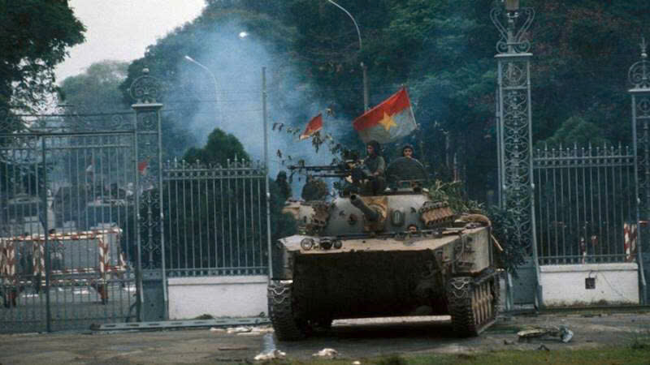
Ý NGHĨA
Chiến thắng 30/4 chấm dứt cách mạng dân tộc dân chủ nhân dân. Sự kiện vĩ đại này đã mở ra một kỷ nguyên mới – kỷ nguyên độc lập, thống nhất và cả nước đi lên Chủ nghĩa Xã hội.
Bài học & Trách nhiệm
Bài học về sức mạnh của đoàn kết toàn dân tộc
Một trong những bài học nổi bật nhất từ sự kiện ngày 30/4/1975 là sức mạnh to lớn của tinh thần đoàn kết dân tộc. Cuộc kháng chiến chống Mỹ đã chứng minh rằng một dân tộc tuy nhỏ bé, nguồn lực còn hạn chế, nhưng khi toàn dân đồng lòng thì có thể vượt qua những thử thách tưởng chừng không thể. Từ miền Bắc đến miền Nam, từ những người lính ngoài chiến trường đến nhân dân nơi hậu phương, tất cả đều chung một ý chí và mục tiêu: giành độc lập và thống nhất đất nước.
Bài học ấy đến nay vẫn còn nguyên giá trị. Trong bối cảnh toàn cầu hóa cùng nhiều thách thức mới như biến đổi khí hậu, dịch bệnh hay cạnh tranh kinh tế, tinh thần đoàn kết giữa các tầng lớp xã hội, các vùng miền và các cộng đồng vẫn là yếu tố then chốt giúp Việt Nam phát triển bền vững. Đoàn kết không chỉ là sự gắn bó về tinh thần mà còn là sự hợp tác hiệu quả, tôn trọng sự đa dạng và cùng nhau hướng tới lợi ích chung của đất nước.
Nghệ thuật quân sự độc đáo và sự chỉ huy dũng cảm
Bài học thứ hai là bài học về sự chỉ huy dũng cảm và thao lược. Cuộc Tổng tiến công và nổi dậy mùa Xuân năm 1975 đã thể hiện rõ tài lãnh đạo sáng suốt, tầm nhìn chiến lược và nghệ thuật chỉ huy tài tình của Bộ Chính trị và Quân ủy Trung ương. Nhờ biết nắm bắt đúng thời cơ và tổ chức các đòn tiến công táo bạo, quyết đoán, quân và dân ta đã nhanh chóng giải phóng miền Nam, hoàn thành sự nghiệp thống nhất đất nước.
Trang sử vàng không thể quên
Cách đây 50 năm, vào mùa Xuân năm 1975, toàn dân tộc ta đã làm làm nên một chiến công chói lọi trong lịch sử – cuộc Tổng tiến công và nổi dậy vĩ đại mà đỉnh cao là Chiến dịch Hồ Chí Minh lịch sử. Ngày 30/4/1975 đã khắc sâu vào tâm khảm triệu triệu người con đất Việt như một mốc son huy hoàng, mở ra kỷ nguyên mới – kỷ nguyên độc lập, tự do, thống nhất non sông, đưa đất nước vững bước trên con đường xây dựng chủ nghĩa xã hội. Cuộc chiến khốc liệt trong lịch sử dân tộc đã đi qua nhưng những nỗi đau, mất mát vẫn còn đó… Với những người trẻ hiện đại, ngày 30/4 là một dấu mốc quan trọng không thể quên, là bài học xương máu để họ nỗ lực, cống hiến hết mình cho sự phát triển trường tồn của dân tộc.
Trách nhiệm của thế hệ trẻ hôm nay

Ngày nay khi đất nước đã hòa bình lặp lại, thế hệ chúng ta được sống trong môi trường tốt hơn, mọi thứ đầy đủ và sung túc. Càng như vậy thế hệ chúng ta càng phải thấm nhuần, biết ơn những người đã hi sinh đi trước để Bảo vệ Tổ quốc mang lại cuộc sống bình yên. Để cảm ơn những vị cha, anh, chị đã hi sinh thì thế hệ học sinh chúng ta phải sống ý nghĩa và phải gia sức bảo vệ Tổ quốc. Mỗi chúng ta, thế hệ trẻ hôm nay để làm tốt điều này thì phải coi đây là một nghĩa vụ thiêng liêng cao quý của mỗi công dân. Vậy trách nhiệm của mỗi người đối với việc bảo vệ Tổ quốc là vô cùng quan trọng:
- Tích cực học tập, rèn luyện thân thể, giữ gìn vệ sinh, bảo vệ sức khoẻ.
- Trung thành với Tổ quốc, với chế độ xã hội chủ nghĩa. Cảnh giác trước âm mưu chia rẽ, xuyên tạc của thế lực thù địch; phê phán, đấu tranh với những thái độ, việc làm gây tổn hại đến an ninh quốc gia.
- Tích cực tham gia các hoạt động an ninh, quốc phòng ở địa phương; tham gia đền ơn đáp nghĩa…
- Tham gia đăng kí tham gia huấn luyện nghĩa vụ quân sự khi đến tuổi; sẵn sàng lên đường làm nghĩa vụ bảo vệ Tổ quốc.
- Vận động bạn bè, người thân thực hiện tốt nghĩa vụ bảo vệ Tổ quốc.
Hãy rất vững tin vào hàng triệu bạn trẻ Việt Nam có trái tim nhiệt huyết với khối óc của mình sẽ phát huy sức trẻ, là bệ phóng để Việt Nam vươn mình. Còn đối với số ít những người ngủ quên trong hòa bình mà quên đi quá khứ đau thương, mất mát, nhưng anh hùng, vĩ đại của dân tộc Việt Nam thì cũng nên nhìn nhận lại chính mình. Bởi vì suy nghĩ của họ không cùng chung dòng chảy trong suy nghĩ của dân tộc ta, họ sẽ phải sống dằn vặt và bị xã hội quay lưng khi dám quay lưng lại với quá khứ. Và chắc chắn khi họ quên đi quá khứ hào hùng, dù có làm gì ở đâu, đối với cả dân tộc họ luôn là người thất bại, bạn Dũng nhấn mạnh.
Tư Liệu Học Tập
1. VĂN BẢN
Trong suốt 30 năm đấu tranh vũ trang vì độc lập tự do, thống nhất đất nước có phần công sức lớn của lực lượng biệt động. Là chỉ huy trưởng lực lượng Biệt động Sài Gòn - Gia Định, Đại tá Nguyễn Đức Hùng (1928-2012), thường gọi là Tư Chu, đã viết cuốn sách “Biệt Động Sài Gòn - Chợ Lớn - Gia Định trong 30 năm chiến tranh giải phóng (1945 - 1975)”.
Tác giả Nguyễn Hữu Thái là một “người trong cuộc” chứng kiến ngày sụp đổ và giải phóng Sài Gòn hơn 30 năm về trước. Nguyễn Hữu Thái nguyên là cựu Chủ tịch Tổng hội Sinh viên Sài Gòn (1963-1964) hoạt động trong phong trào nội thành.
Tác phẩm: Gia đình, bạn bè và đất nước – Nguyễn Thị Bình (hồi ký, 2012; tái bản 2025). Tác phẩm: Hồi ký chiến trường: Từ sông Bến Hải đến Dinh Độc Lập – Thiếu tướng Hoàng Đan (nhật ký, 2025).
Sách & Hồi ký lịch sử
-

Biệt Động Sài Gòn (1945 - 1975)
Lịch sử 30 năm xây dựng và những chiến thắng vẻ vang của lực lượng Biệt động.
-

Bút ký lính tăng
Hành trình đến ngày chiến thắng được chiến sĩ lái xe tăng 380 Đại tá Nguyễn Khắc Nguyệt kể lại.
-

Từ sông Bến Hải đến Dinh Độc Lập
Hồi ức của Thiếu tướng Hoàng Đan. Ông nhắc những kỷ niệm về các trận đánh mà ông và đồng đội trải qua.
-

Tổng hành dinh trong mùa Xuân
Hồi ức của Đại tướng Võ Nguyên Giáp về chiến lược, sự sáng suốt và nhạy bén của Bộ thống soái tối cao.
-

Chuyện Ít Biết Về 30/4/1975
Tác giả Nguyễn Hữu Thái ghi lại lời kể của những nhân chứng khác đến từ các phía đối nghịch.
2. Hình Ảnh Lịch Sử (Từ Tài Liệu)
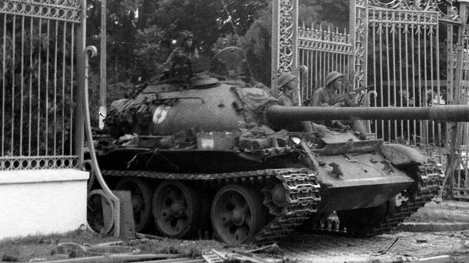
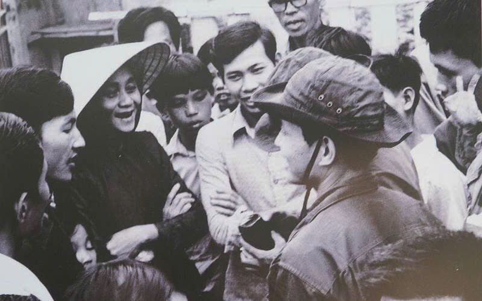
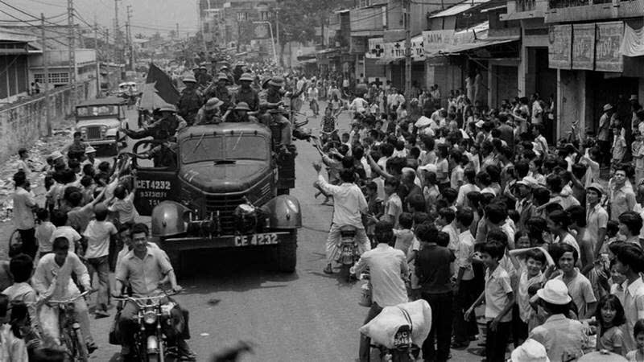
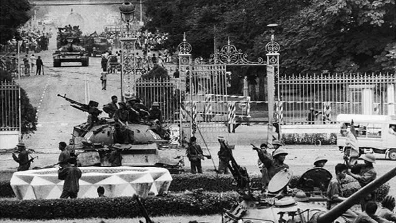
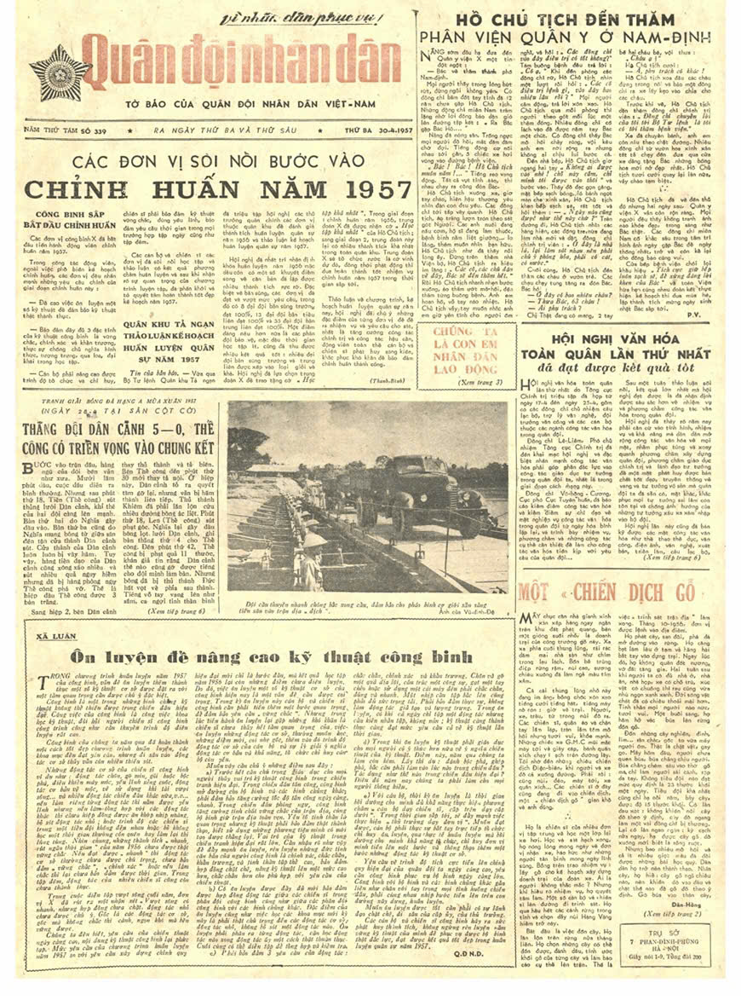
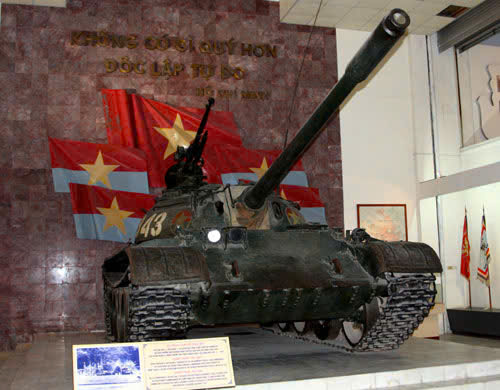
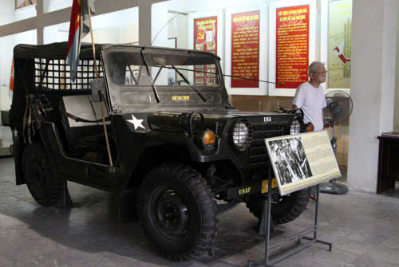
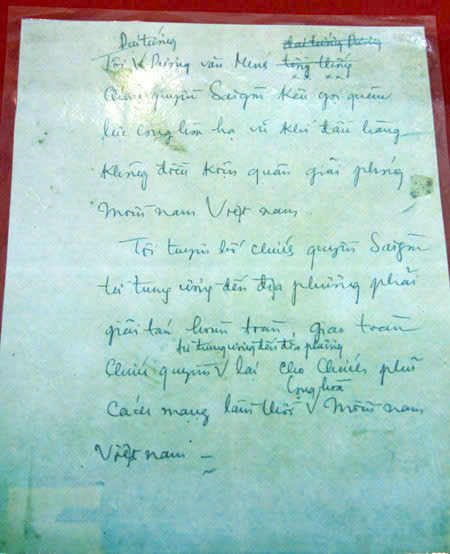
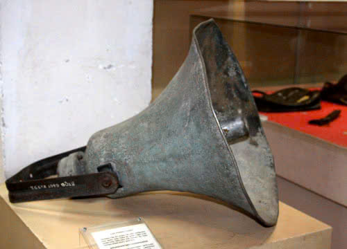
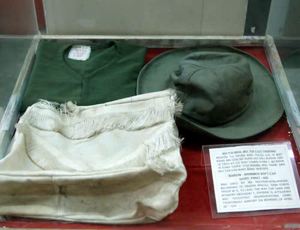
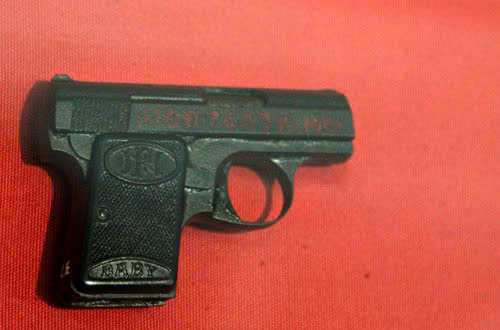
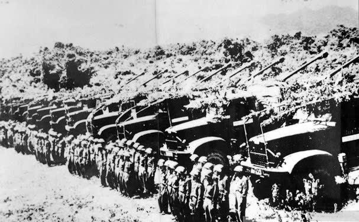
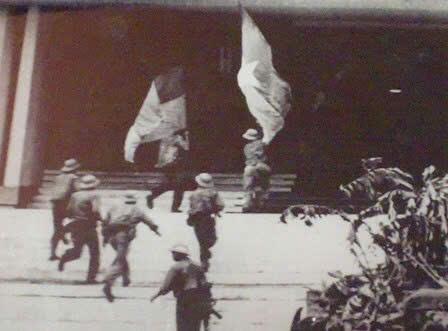
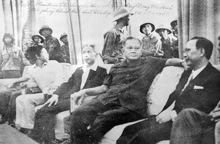
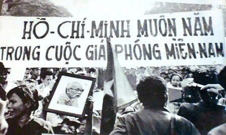
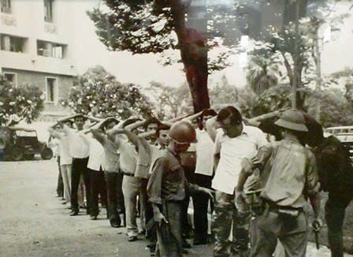
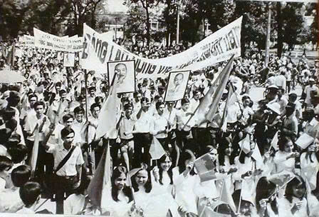
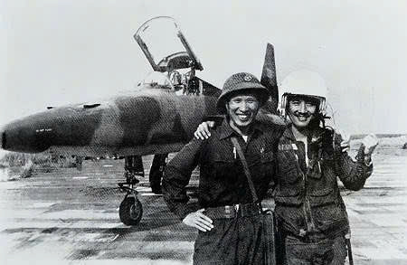
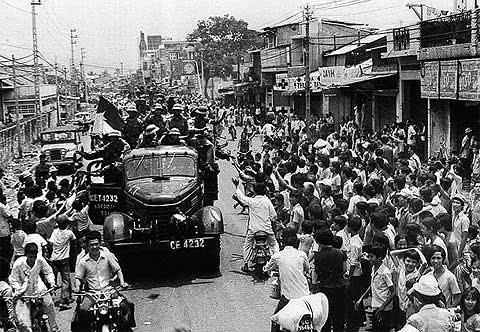
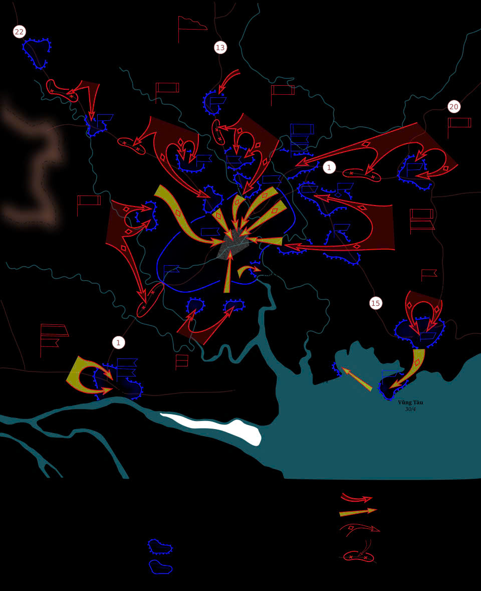
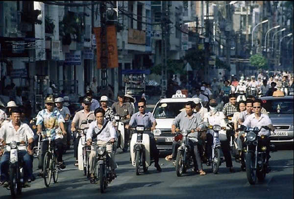

3. Video Tư Liệu
Chiến dịch HỒ CHÍ MINH
Bản tin toàn thắng năm ấy
BIỆT ĐỘI CHIẾN DỊCH 30/4

- Phân công nhiệm vụ, viết code
- Duyệt nội dung

- Ghi chép
- Tìm nội dung

- Code HTML/CSS
- Thiết kế Web, tổng hợp nội dung

- Lập trình JV
- Tìm nội dung, thiết kế web

- Tìm dữ liệu lịch sử
- Viết bài học
.jpg)
- Tìm tài liệu lịch sử
- Viết nội dung

- Tìm hình ảnh
- Quản lý Form

- Tìm nội dung
- Tìm video 30/4
THÔNG TIN LIÊN HỆ: Nhóm 1 Tin Học lớp 12A1
Facebook: Võ Đức Hùng | Zalo: 0384 535 921
EMAIL: duchungvo793@gmail.com